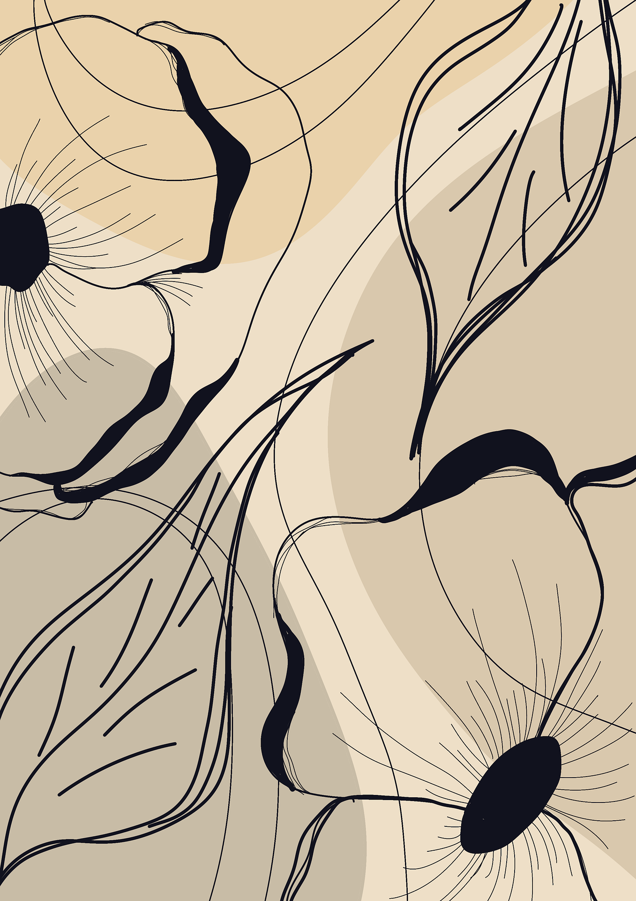

La ultima inocencia
Alejandra Pizarnik
Partir
en cuerpo y alma
partir
Partir
deshacerse de las miradas
piedras opresoras
que duermen la garganta

El despertar
Alejandra Pizarnik
Señor
La jaula se ha vuelto pájaro
y se ha volado
y mi corazón está loco
porque aúlla a la muerte
y sonríe detrás del viento
a mis delirios
Presencia
Alejandra Pizarnik
Tu voz
en este no poder salirse las cosas
de mi mirada
ellas me desposeen
hacen de mí un barco sobre un río de piedras
si no es tu voz